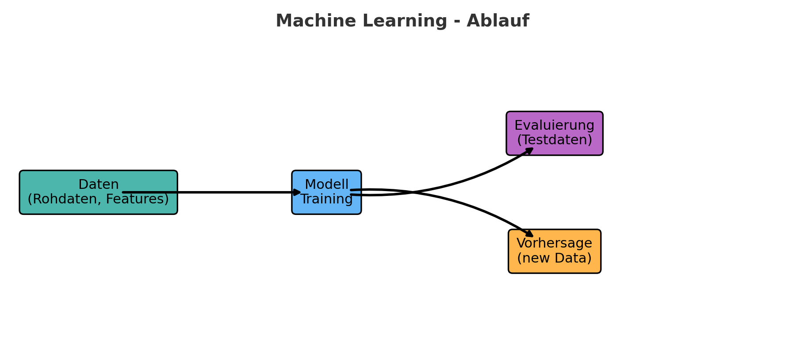

Machine Learning
Was ist Machine Learning?
Machine Learning ist ein Teilgebiet der künstlichen Intelligenz.
Modelle lernen aus Daten Muster zu erkennen und können damit Vorhersagen für neue Situationen treffen.
Beispiele
- Bilderkennung
- Sprachverarbeitung (Chatbots, Übersetzer)
- Kundendatenanalyse (Churn Prediction)
Praktische Projekte
Churn Prediction
from sklearn.datasets import make_classification
from sklearn.model_selection import train_test_split
from sklearn.linear_model import LogisticRegression
from sklearn.metrics import accuracy_score, confusion_matrix
import seaborn as sns
import pandas as pd
import matplotlib.pyplot as plt
# 1. Dummy-Daten generieren
X, y = make_classification(
n_samples=1000, n_features=5, n_informative=3,
n_redundant=0, n_repeated=0, n_classes=2, random_state=42
)
# 2. DataFrame erstellen
df = pd.DataFrame(X, columns=["Vertragsdauer", "Monatskosten", "Beschwerden", "Supportkontakt", "Alter"])
df["Churn"] = y
# 3. Train/Test Split
X_train, X_test, y_train, y_test = train_test_split(
df.drop("Churn", axis=1), df["Churn"], test_size=0.2, random_state=42
)
# 4. Modell trainieren
model = LogisticRegression()
model.fit(X_train, y_train)
# 5. Vorhersage
y_pred = model.predict(X_test)
# 6. Bewertung
acc = accuracy_score(y_test, y_pred)
print(f"Accuracy: {acc:.2f}")
cm = confusion_matrix(y_test, y_pred)
# 7. Confusion Matrix visualisieren
sns.heatmap(cm, annot=True, fmt="d", cmap="Blues",
xticklabels=["Kein Churn", "Churn"],
yticklabels=["Kein Churn", "Churn"])
plt.xlabel("Vorhergesagt")
plt.ylabel("Tatsächlich")
plt.show()